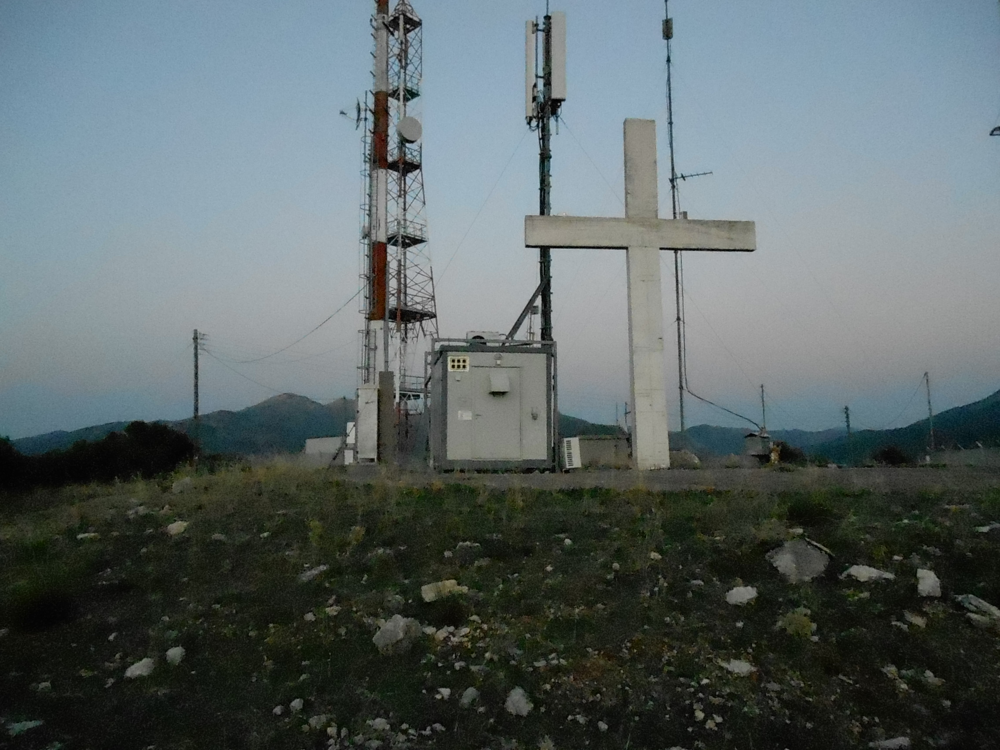

Το ζήτημα των κεραιών στον Σταυρό δεν είναι νέο. Επανήλθε όμως πρόσφατα στο προσκήνιο, στη συζήτηση της 22ας Απριλίου 2026, όπου έγινε επίκληση απόφασης του Ειρηνοδικείου για τα όρια της περιοχής. Είναι, όμως, ζήτημα που συνεχίζει να αντιμετωπίζεται με την ίδια αόριστη, εύκολη βεβαιότητα που δεν οδηγεί πουθενά.
Γνωρίζω τον Σταυρό καλά. Τον έχω ανέβει, τον έχω περπατήσει, τον έχω καταγράψει, και το αποδεικνύω δημόσια: στο κανάλι μου στο YouTube, «Μέσα από τον Φακό Μου», υπάρχουν βίντεο από τον Σταυρό και από την ανάβαση μέσω του δημόσιου δρόμου. Δεν μιλώ από ακοή. Μιλώ από επίσκεψη, καταγραφή και σύγκριση.
Πέρα από την προσωπική εξοικείωση με τον χώρο, έχω κάνει επιτόπια αυτοψία μαζί με δύο παλιούς ανθρώπους του τόπου: τον Γιαννίκο Μιχαλακόπουλο και τον Παναγιώτη Μιχαλακόπουλο, γνωστό ως Κλέτσο. Και οι δύο είχαν μεγάλη ηλικία εκείνη την εποχή, και οι δύο έχουν φύγει από τη ζωή, αλλά γνώριζαν τον χώρο και την ιστορία του από πρώτο χέρι. Από εκείνη την επίσκεψη υπάρχει φωτογραφικό υλικό, που εξετάστηκε παράλληλα με το έγγραφο της απόφασης του Ειρηνοδικείου.
Τι λέει η απόφαση — και τι παραβλέπεται
Η απόφαση αυτή δεν περιορίζεται στη ροή των υδάτων. Αναφέρει και σταθερά σημεία οριοθέτησης, και αυτά είναι, κατά την κρίση μου, τα πλέον αξιόπιστα κριτήρια. Τα όμβρια ύδατα μπορεί να έχουν αλλάξει πορεία μέσα σε εκατό χρόνια, ιδίως αφού ο χώρος έχει υποστεί σημαντικές μεταβολές: πρώτα με την ανέγερση του Σταυρού από τον αείμνηστο Παπαγιάννη, τον Γερόπαπα, και αργότερα με τις διαμορφώσεις που έκαναν οι εταιρείες κινητής τηλεφωνίας για τις εγκαταστάσεις τους.
Με βάση τη σύγκριση του εγγράφου με την εικόνα του τόπου και με όσα διαπιστώθηκαν στην αυτοψία, θεωρώ ότι οι κεραίες βρίσκονται σε χώρο που ανήκει στην Κοινότητα Σταυροδρομίου. Αυτό δεν είναι εικασία. Είναι εκτίμηση που στηρίζεται σε επιτόπια εξέταση, σε αρχειακό έγγραφο και σε φωτογραφικό υλικό που διατηρώ.
Τα έσοδα: πού πήγαιναν και πώς διορθώθηκε
Μιλώ και ως πρώην Πάρεδρος Τροπαίων & Πρόεδρος Σταυροδρομίου. Ήμουν εκείνος που έκανε τις ενέργειες ώστε τα έσοδα από τις κεραίες να αποδίδονται στον Δήμο Τροπαίων για λογαριασμό της Κοινότητάς μας. Μέχρι τότε κατευθύνονταν στον Δήμο Λαγκαδίων. Ήταν μια δύσκολη διαδρομή. Οι περισσότεροι εκτιμούσαν ότι το θέμα ήταν άλυτο. Προχώρησα μόνος, το έβγαλα εις πέρας.
Αυτή η εμπειρία δεν είναι προσωπική ικανοποίηση· είναι απόδειξη ότι τα ζητήματα αυτά μπορούν να ρυθμιστούν σωστά, αν τα προσεγγίσει κανείς με σοβαρότητα και επιμονή.
Η σημερινή κατάσταση
Τώρα, οι κεραίες βρίσκονται πάνω από τα κεφάλια μας σε απόσταση που προκαλεί εύλογη ανησυχία, και παρ' όλα αυτά λογίζονται ως ανήκουσες σε κοινότητα που απέχει χιλιόμετρα. Αυτό δεν είναι μικρή ανακρίβεια. Και δεν αντιμετωπίζεται με γενικόλογες τοποθετήσεις ή με συστάσεις να «ανέβει κανείς στον Σταυρό», χωρίς πρώτα να έχει μελετήσει το έγγραφο.
Εγώ μίλησα με γνώση, με αυτοψία και με ευθύνη. Ζητώ το ίδιο από όλους όσοι θέλουν να έχουν λόγο σε αυτό το θέμα.
Πρώην Δημαρχιακός Πάρεδρος Δήμου Τροπαίων & Πρόεδρος Τοπικού Συμβουλίου Σταυροδρομίου